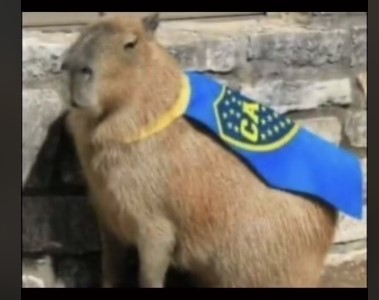

Ultima hora
Capibara de boca es increible
Que jugadoooooor mas mágnifico señoras y señoras, miradle ahi sin hacer nada igual que el equipo
¿Ganará algun partio?
Seguramente no, estan funesta su habilidad para jugar como la del señor que esta escribiendo esto
¿Que es un cpibara de boca?
Hay que verlo como dos términos distintos para no acabar en la confusión, el capybara o tambien conocido como
carpincho, es el roedor mas grande jamás reconocido, sin embargo boca, es un equipo de fútbol bastante cutre

Capybara de Boca